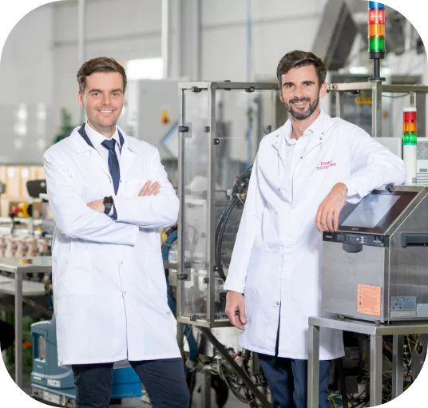

-
Entreprise familiale fidèle à la tradition
Aerosol Service est une entreprise avec 30 ans d'expérience dans la fabrication sous contrat et de marque privée dans les secteurs des cosmétiques et de la chimie ménagère. Grâce à notre passion et engagement dans la création des produits, nous sommes hautement prisés par nos partenaires d'affaires. Nous sommes fiers du fait que la haute qualité de nos produits est appréciée par de nombreux clients dont les produits remplissent les rayons des magasins du monde entier. Nous nous efforçons en permanence d'améliorer nos services et de créer les solutions innovantes qui ont une influence réelle sur la qualité de vie des consommateurs dans le monde entier.
- 
Aerosol Service est une entreprise avec 30 ans d'expérience dans la fabrication sous contrat et de marque privée dans les secteurs des cosmétiques et de la chimie ménagère. Grâce à notre passion et engagement dans la création des produits, nous sommes hautement prisés par nos partenaires d'affaires. Nous sommes fiers du fait que la haute qualité de nos produits est appréciée par de nombreux clients dont les produits remplissent les rayons des magasins du monde entier. Nous nous efforçons en permanence d'améliorer nos services et de créer les solutions innovantes qui ont une influence réelle sur la qualité de vie des consommateurs dans le monde entier.
-
Ensemble pour le futur
Chez Aerosol Service, nous savons que ce sont les adolescents qui constituent les piliers des succès futurs. C'est pourquoi nous nous engageons dans le parrainage des équipes de jeunesse sportive et des événements au niveau régional aussi bien que suprarégional. Nous voulons inspirer et soutenir les talents en développant les passions et en tissant des liens étroits au sein des communautés locales. Notre engagement est une contribution au futur de notre jeunesse et à un meilleur avenir.
-
Responsabilité d'abord
L'engagement en faveur de l'environement est notre priorité. Nous menons nos activités dans le respect total de l'environnement, en employant les solutions innovantes et les technologies respectueuses de la nature. Nous agissons en faveur du développement durable, en conservant notre planète pour les générations futures.
Conscience sociale
Chez Aerosol Service, nous sommes socialement conscients. Ici, la responsabilité sociale est une valeur primordiale. Nous respectons les principes éthiques en veillant au bien-être de nos employés et clients et en nous souciant de l'environement. Notre conscience sociale nous motive à entreprendre les activités en faveur de la communauté locale et à générer un impact positif. Nous sommes un partenaire fiable qui se préoccupe du bien commun.